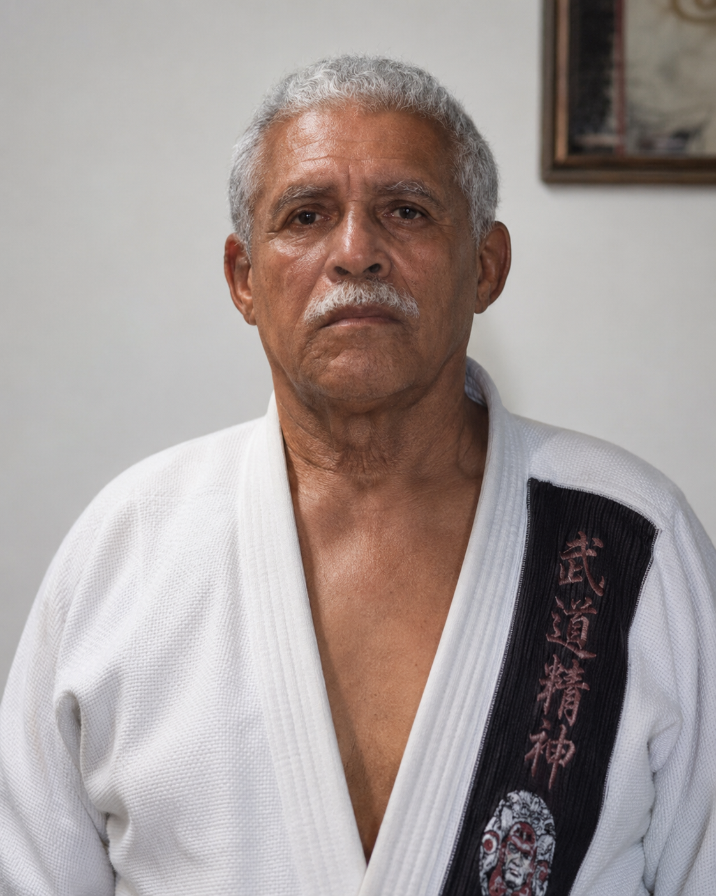

RAME - Mestres e Professores

Hierarquia e tradição
Conhecimento transmitido de mestre para aluno
A lista abaixo organiza os mestres, professores e instrutores que preservam a técnica, a disciplina e os valores do Rame Seishin Jutsu.
| Grau | Nome Completo | Posição |
|---|---|---|
| HACHIDAN | José Higino Alves Nunes | Mestre do Estilo |
| HACHIDAN | Elso Jorge de Nascimento | In Memoriam |
| ROKUDAN | Francisco Soares dos Anjos Filho | Presidente |
| GOKDAN | Marcelo Antonio da Lima | Diretor Técnico |
| YONDAN | Samuel Rocha de Araujo | |
| YONDAN | Klamilson Jorge de Nascimento | |
| YONDAN | Nilson José Bispo de Souza | |
| YONDAN | Sebastião Vicente da Silva | |
| SANBAN | Kleber Jorge do Nascimento | |
| SANBAN | Edmundo José Portella | Conselheiro |
| SANBAN | Waldemar Ignácio Martins de Oliveira | |
| SANBAN | Pedro Paulo da Costa | |
| SANBAN | Luiz Eduardo Pinheiro da Costa | |
| NIDAN | Horácio de Souza Correa | |
| NIDAN | Willian Paulo Maurício | |
| NIDAN | Alexandre Vasconcellos Fatude | |
| NIDAN | Marcos Paulo de Oliveira | |
| NIDAN | Jader Machado Junior | Diretor de Patrimônio |
| NIDAN | Willian dos Santos Pereira | |
| NIDAN | Gilberg Pereira da Silva | |
| NIDAN | Roque Escoffer Gomes da Silva | |
| NIDAN | Gilson Antonio da Silva Júnior | |
| NIDAN | Edilson Antonio da Silva | |
| SHODAN | Luiz Claudio Pinto Santos | 1º Secretário |
| SHODAN | Alan Luiz da Silva | |
| SHODAN | Marcelo Vasconcellos Fatude | |
| SHODAN | João Marcos de Oliveira Vianna | |
| SHODAN | Santiago Vieira Marinho | |
| SHODAN | Raimundo Nonato Miranda de Carvalho | |
| SHODAN | Paulo Cesar Taineira de Oliveira | |
| SHODAN | Luiz Henrique Silva Teixeira | |
| SHODAN | Antonio Felipe S A Reis do Sena | |
| SHODAN | Fabríci do Couto de Araujo | |
| SHODAN | Sandro Soares Barbosa | |
| SHODAN | Carlos Eduardo de Oliveira | |
| SHODAN | Wesley Barbosa Chaves | Conselheiro |
| Dr. | Carlos Antonio F. do Couto | Depto. Jurídico |
| Srta. | Ronaldeide Soares dos Anjos | Tesoureira |
Tabela atualizada conforme informações oficiais do RAME Seishin Jutsu. Para atualizações ou correções, entre em contato através da página de contato.